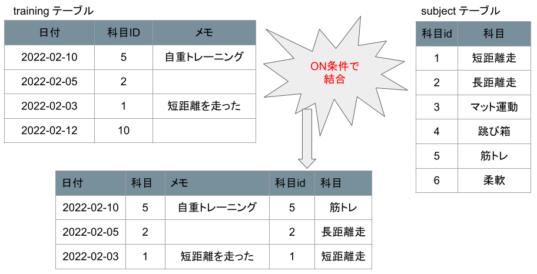

△選択列には両テーブルの列が指定可能
たとえば、トレーニング内容を記録するデータベースがあるとします。
1つはトレーニング内容を記録するテーブル[training]
2つめはトレーニング内容を記録する科目テーブルとします[subject]
これらのテーブルに、このようなSQLを記述します。
上記で注目してほしいのは、列に指定している列である[科目]はtrainingテーブルに存在しない列ということです。
理由はJOIN句によってsubjectテーブルの列が参照可能になっているからです。
そして実際にJOINを行うとこのような動作になります。
ここからさらに指定した列や、WHEREで行の絞り込みが行われます。
つまり結合とは、テーブルを単純に足し合わせるのではなく、ON句によって条件が満たされた行をつなげるもの。
ここで上記の図について、trainingテーブルには本来、科目ID = 10 が存在するはずですが、結合時には消えてしまっています。 このようにJOINするテーブル先に結合相手がいない場合や、FROM句で指定したテーブルの結合条件の列がNULLの場合は、結合結果から消滅してしまいます。 上記画像だと、trainingテーブルの科目ID = 10 は結合する表のsubjectテーブルに存在しない(科目idに無い)ので実行結果から消滅して3行で出力されています。
JOINするテーブル先に結合相手がいない場合や、左表のFROM句で指定したテーブルの結合条件の列がNULLの場合は、結合結果から消滅してしまいます
このような結合を内部結合といいます。
ただ、左表であるFROM句の行が消滅してしまっては困ってしまうこともあるでしょう。
この時は、左外部結合を指示することで、左表のFROM句の列に対する結合相手がいなくても強制的に出力させることができます。
このようにSQLに記述します。
そして実際にLEFT JOINを行うとこのような動作になります。
このようにJOINで指定したテーブル先に結合相手がいなくとも、処理を実行してON句で結合不可能な列に対してはnullが格納されます。
JOINしたテーブル先に結合相手がいない場合や、FROM句で指定した左表のテーブルの結合条件の列がNULLの場合でも
結合を実行して、結合先がいない場合、右表の列に相当する列にはnullを格納する。
このような結合を外部結合といいます。
そのほかにも右外部結合があります。
そして実際にRIGHT JOINを行うとこのような動作になります。
JOIN句で指定した右テーブルを全行出力する。 このような結合を外部結合といいます。
そして外部結合には他にも、FULL JOINというものがあります。
左右テーブルを全行出力する。 このような結合を外部結合といいます。
結合すべき行が見つからない時に行が消滅してしまうのが内部結合(inner join)
本来消滅してしまう行を強制的に出力させるものが外部結合(outer join)